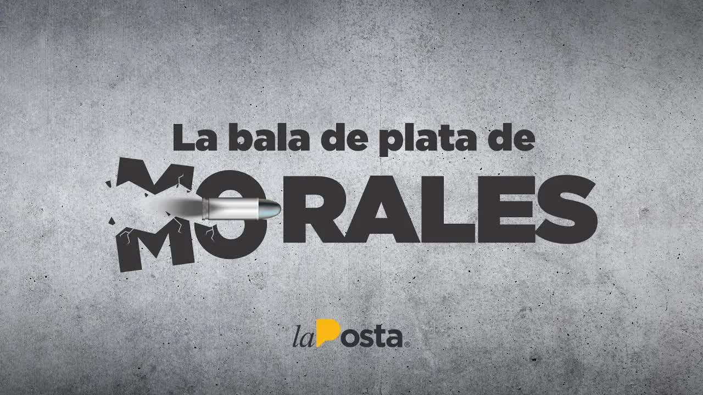
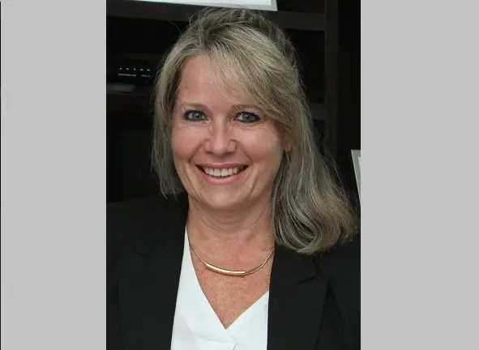
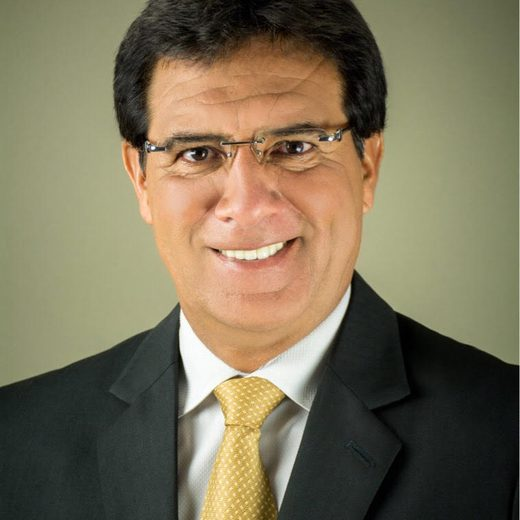
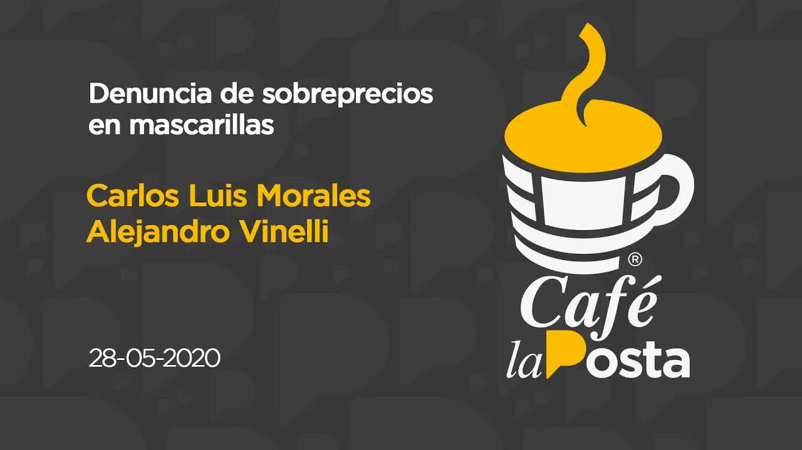
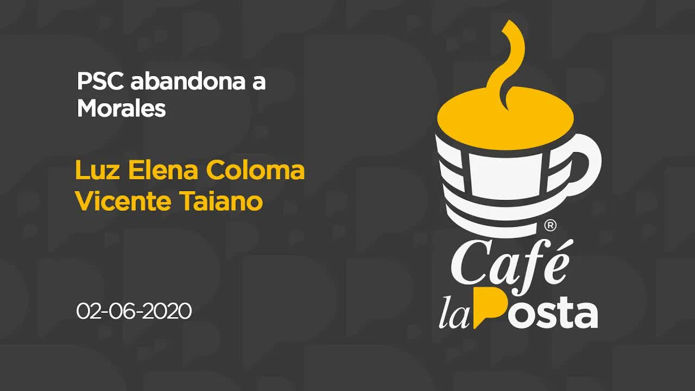
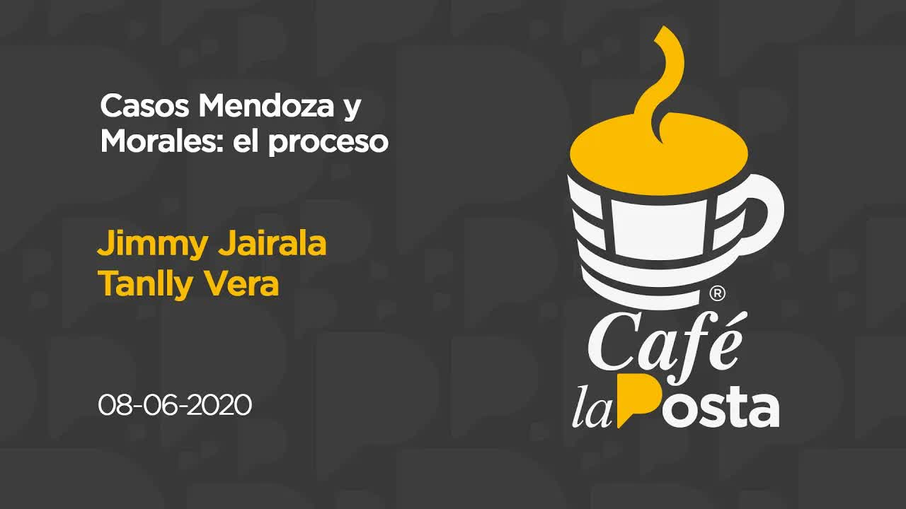
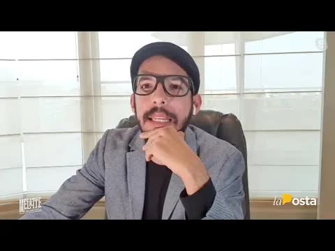
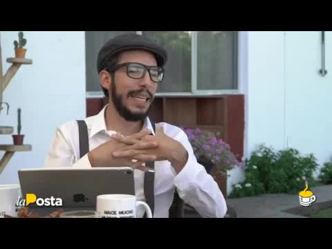
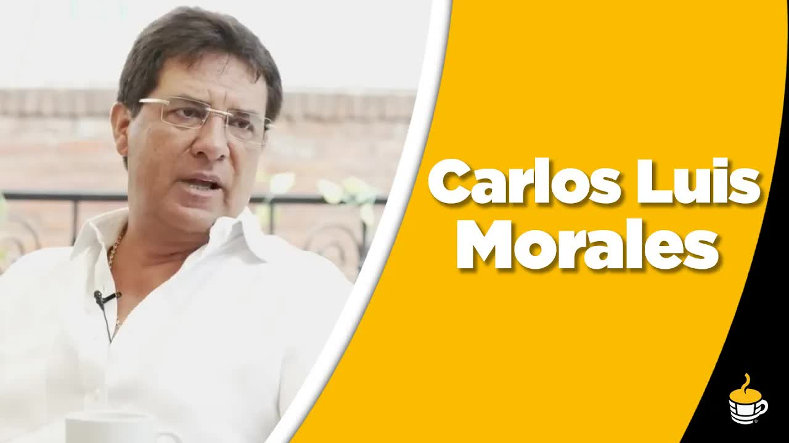

May 31, 2020 · The threads of Morales's circle
Masks at 6.71
Carlos Luis Morales Benítez was born on June 12, 1965. He was goalkeeper for Barcelona and for the national team at the 1990 World Cup in Italy, then a sports presenter on television and then a politician: he went through the Roldosista party, through Jimmy Jairalá's Centro Democrático and through the alliance with the Social Christian Party (PSC) that took him to the Guayas provincial government in May 2019. In his first interview with La Posta as prefect-elect he promised that the people of Guayas would know where every last cent went and that he would never allow anyone to call him a thief. The pandemic found him there. Between March and May 2020 his provincial government signed some fifteen emergency contracts worth more than five million dollars. Two became notorious: 70,000 N95 masks at 6.71 dollars each, when they cost three or less on the market and there were public purchases at 2.40, and 5,000 rapid covid tests at 23.16 dollars, when the Guayaquil city government had bought them at 11.
The Attorney General's Office had raided the provincial government on May 27, at the public procurement and finance offices, over alleged embezzlement. La Posta began on May 28, 2020, with the overpricing allegations: it interviewed the prefect and, separately, Alejandro Vanelli, of SaludMed, the company behind the Quito city government's PCR tests, the other scandal of the day. On May 31 it published a five-minute report, The threads of Morales's circle, on another contract: 90,000 dollars for a statistical covid projection awarded to Zerasamiz S.A. Its president, Hermelindo Velásquez Castro, lives in Chongón, a working-class area on the outskirts of Guayaquil, and told the camera that he knows nothing about companies: one day officials from the provincial government asked him to lend his signature.
The threads led to the family. The phone number Velásquez used to sign was the same as that of Cicerocorp, another provincial government contractor that he also chairs. Cicerocorp's books are kept by Miguel Ángel Calderón, the same accountant as Talleres Multimarcas Autostar, the company of Xavier Vélez Velásquez and his son Xavier Vélez Arcos, father and brother of Andrés Vélez Arcos, the prefect's stepson. Zerasamiz's shareholders include Mario Mantilla Cuello, owner of Global Company, whose accountant shares a registered phone number with Recreate y Comunicaciones, the company of Sandra Arcos, Morales's wife. Primicias described them as six shell companies with managers, shareholders, accountants and even the same phone number in common.
$90,000for a statistical covid projection, awarded to a company whose president lent his signature.
The silver bullet
On June 1, the PSC turned its back on him: Jaime Nebot and Cynthia Viteri called for him to be investigated, and the party's assembly members signed a statement laying out three options: hand over those responsible, turn himself in or resign. On June 2, Morales publicly accused his wife's sons over the irregularities in the contract awards and said he would act no matter who fell; that day Vicente Taiano announced on Café La Posta that the party would seek his removal in the Provincial Council. In the early hours of June 3, an Attorney General's Office task force with 45 prosecutors carried out simultaneous raids and arrests in Quito and Guayaquil over pandemic corruption: in Guayaquil it arrested Abdalá Bucaram at his home in Kennedy Norte, over the Social Security hospitals, and raided the prefect's house on the road to Samborondón over alleged influence peddling and embezzlement in the purchase of supplies, tests and masks. That morning the police were looking for him; hours later he was arrested. His stepsons' whereabouts were unknown and his wife ended up a fugitive. On June 4, Morales was charged with influence peddling under Article 285 of the criminal code, which carries three to five years.
Morales defended himself on La Posta on May 28: there is no corruption here, he said; he bought in a collapsed market when six hundred people a day were dying in Guayas and he had 430 workers to protect; his was the cheapest offer among those that qualified, he said, and he removed Verónica Loaiza, director of Community Development, who signed the contract. The Guayas provincial government's annual budget was around 300 million dollars, 168 million of it committed to debts with contractors.

That June 4, La Posta published the silver bullet. The investigation had zeroed in on a contract between Morales and Bigmart, a company whose owner, Pedro Morán, was Sandra Arcos's accountant. Pulling on that thread, it turned out that Morán was also a former manager and former partner of Andrés Vélez Arcos, the stepson, in Cynthialand, an advisory and consulting firm now owned by Andrés and Xavier Vélez Arcos, with few clients: almost all of them provincial government contractors. The scheme, according to La Posta: the provincial government hires Renauta, Bigmart or Cynthialand for sports exhibitions, uniforms or field management; the companies linked to the stepsons get paid, fake a consulting job with Cynthialand to justify the payment, and Cynthialand transfers 75 percent to companies declared ghost companies by the Internal Revenue Service (SRI), which are used to withdraw the money in cash. La Posta said it clearly: it had not proven the prefect's direct involvement in the scheme, though it was hard to doubt that he knew.
Guayas provincial government
The contracts' family tree
Carlos Luis Morales
Prefect of Guayas (2019-2020). Previously sports adviser to the provincial government (2014-2016) and Guayaquil city councilor (2017-2018)
Sandra Arcos
Wife. Owner of Recreate y Comunicaciones S.A.
Andrés Vélez Arcos
Stepson. Owner of Cynthialand with his brother Xavier; previously Pedro Morán's partner in it. Shareholder in the Panamanian offshore company
Xavier Vélez Arcos
Stepson. Shareholder in Talleres Multimarcas Autostar with his father, Xavier Vélez Velásquez
Pedro Morán
Accountant for the Arcos family, owner of Bigmart; former manager and partner in Cynthialand. Received a 150,000-dollar contract shortly before the emergency
Miguel Ángel Calderón
Accountant. Kept the books for Cicerocorp, a shell company and contractor, and for Talleres Multimarcas
Hermelindo Velásquez Castro
Chongón resident who lent his signature. Main shareholder and president of Zerasamiz (90,000-dollar contract) and president of Cicerocorp
Mario Mantilla Cuello
Shareholder in Zerasamiz and owner of Global Company, whose accountant shares a registered phone number with Recreate y Comunicaciones
Zerasamiz S.A.Cicerocorp S.A.Global Company S.A.Recreate y Comunicaciones S.A.Talleres Multimarcas Autostar S.A.CynthialandBigmart
PanamaPanamanian company created in 2017 in the names of Andrés and Xavier Vélez Arcos and Sandra Arcos. It did not appear in the prefect's sworn asset declaration; the law prohibits officeholders from having ties to tax havens
And it did not start in 2019. La Posta traced those companies' public contracts: thirteen with the provincial government worth 1,783,000 dollars, concentrated between 2014 and 2016 and, in those years, all in the sports area; at least twelve were signed under the administration of Jimmy Jairalá, then Morales's ally in Centro Democrático. In those years Morales was an adviser to the provincial government, on the payroll of the Sports directorate, the office that signed them. In 2017, when he became a Guayaquil city councilor, the contracts with the provincial government stopped and city contracts worth just over 250,000 dollars appeared in 2017 and 2018. When he returned to the provincial government, the contractors returned too: shortly before the emergency, 150,000 dollars in the name of Pedro Morán. And like every white-collar story, it ended in Panama: an offshore company created in 2017 in the names of Andrés and Xavier Vélez Arcos and Sandra Arcos, which did not appear in the sworn declaration the law requires, the same law that prohibits officeholders from having ties to tax havens.
When you pull on the thread, the truth is laid bare, and it is of grotesque proportions.
La Posta, Morales's silver bullet, June 4, 2020
Nineteen days
Morales was released under alternative measures with an electronic ankle monitor. On June 5 the PSC gathered its mayors with Cynthia Viteri and announced it would seek his removal: it needed 22 votes on the Provincial Council, had 15, and the process could take 30 to 40 days. On June 8 Jimmy Jairalá discussed the case on Café La Posta: no alarm went off during his administration, he said, because the companies were qualified, there were records and audits by Carlos Pólit's Comptroller General's Office, and the Guayaquil city government signed three more contracts with the same companies. On June 22, 2020, at age 55, Carlos Luis Morales died in Samborondón. According to La Posta, he suffered a massive heart attack and the autopsy found serious preexisting conditions; Primicias reported pneumonia associated with the coronavirus. The Attorney General's Office opened an investigation into his death. The Comptroller General's Office had established the alleged overpricing of the purchases in its report. He was the prefect of the province hardest hit by the pandemic, and he died eighteen days after the criminal investigation against him was opened. His removal never happened.
On August 20, 2020, La Posta showed a manila envelope sent by a lawyer named Alejandro Vélez, most likely Javier Alejandro Vélez Arcos, the stepson, and found in the false bottom of a drawer. Inside were documents that reached the prefect in the days when he was fighting to hold on to his post. La Posta called it Morales's crooked testament: a coded letter, two "king's funds," an internal one with the "queen" and an external one; 5,000 a month for "princes and princesses"; the operating expenses that "Bigote" (Mustache), meaning Nebot, would generate in the "regional war," meaning the removal effort. And two tables: a yellow one for 1.3 million and a red one for 2.6 million, with the kickback by type of contract: 5 to 10 percent on roads and paving, 10 to 15 on studies and oversight, 15 to 25 on consulting and training; suppliers who were asked for 7 or 8 percent; a list of 85 people to be hired with salaries of more than a thousand dollars. Morales had not declared any foreign accounts, but the envelope spoke of funds abroad. La Posta publicly offered the originals to the Attorney General's Office. By then the case continued against his circle: his wife a fugitive and his stepsons seeking bail, in proceedings that had gone dormant once the politician was dead. That show also featured the new prefect, Susana González: everything is more rotten than we imagined, she said; she let go of 200 people, found 99 million in debts owed by the state to the provincial government and called for audits of the two road concessions, extended to 2026 and 2029, which were taking 7 million a month.
18days between the opening of the criminal investigation and Morales's death
> $5Min emergency contracts at the provincial government
5 to 40%the kickback per contract according to the tables in the crooked testament
How it ended
Without Morales, the case fizzled out. On November 9, 2020, at the preliminary hearing, the prosecutor declined to charge Sandra Arcos and one of her sons; they were dismissed and acquitted in December. Five people were left out of the proceedings. On January 12, 2021, a judge sent five people to trial for influence peddling: Cecilia Honce, former director of Community Development; Nelson González, the provincial government's finance director; and contractors José Luis Vásconez, Ana Guacho and Mary Mendoza. Guacho had received more than 1.3 million for fumigation equipment and quaternary ammonium; Mendoza, 143,000 for protective equipment.

The trial opened on September 1, 2022, and lasted eighteen days. On September 20, 2022, judges Byron Andrade, Henry Morán and Richart Gaibor acquitted Honce, González, Guacho and Mendoza. Vásconez, the fifth, is a fugitive and could not be tried. A higher court upheld the four's acquittal. No one was convicted over the masks, the tests or the family's contracts. The six shell companies are still on the registry.
The story had an unexpected sequel. In January 2026, alias Marino, a leader of Los Lagartos, was killed in Isla Mocolí. His partner was Micaela Morales, the former prefect's daughter, and the soccer field had been booked by Andrés Vélez, the stepson from the silver bullet. That investigation is in the case file The narco-elite's accounts.
The branches of the tree
Who ended up where
- Carlos Luis MoralesDeceased; criminal case extinguished
- Sandra Arcos and a stepsonCharges dismissed, 2020
- Honce, González, Guacho, MendozaAcquitted, September 20, 2022
- José Luis VásconezFugitive
- Andrés Vélez and Micaela MoralesResurface in the Mocolí case, 2026
Updated September 5, 2026
What's missing
Unanswered questions
- Where the money from the thirteen sports contracts between 2014 and 2016 went
- What is in the 2017 Panamanian company and who runs it today
- Why contractor José Luis Vásconez remains a fugitive
- Who sent the manila envelope
- Who the lawyer Alejandro Vélez who sent the envelope is, and what foreign accounts Morales had
Timeline
Step by step
- 2014-2016Thirteen contracts
The family's companies bill the provincial government 1,783,000, mostly in sports and under Jairalá. Morales is an adviser.
- 2017The offshore
The company of the Vélez Arcos brothers and Sandra Arcos is created in Panama.
- May 15, 2019Prefect
Morales takes over the Guayas provincial government. He promises that every last cent will be accounted for.
- Mar-May 2020Emergency
Fifteen contracts worth more than five million. Masks at 6.71, tests at 23.16.
- May 27, 2020The provincial government is raided
Prosecutors enter the procurement and finance offices over alleged embezzlement.
- May 28, 2020La Posta begins
The overpricing allegations on Café La Posta.
- May 29-31, 2020The threads
Zerasamiz, the borrowed signature and the shared accountants.
- Jun 2, 2020Morales accuses his family
The PSC had abandoned him the day before. Taiano announces the push for his removal.
- Jun 3, 2020Raid
Prosecutors raid his home; police look for him and arrest him hours later. Bucaram is arrested in Guayaquil.
- Jun 4, 2020The silver bullet
Charged with influence peddling. La Posta publishes the family network and the offshore company.
- Jun 5, 2020The PSC seeks his removal
It needs 22 votes on the Provincial Council. It will not happen.
- Jun 22, 2020Morales dies
At 55, in Samborondón.
- Aug 20, 2020The crooked testament
The manila envelope with names and companies.
- Nov 9, 2020No charges
The prosecutor declines to charge the widow and the stepson.
- Jan 12, 2021Five sent to trial
Two officials and three contractors.
- Sep 20, 2022Acquitted
Four found innocent; Vásconez, a fugitive.
The names
Who's who

Died on June 22, 2020
Carlos Luis Morales
Prefect of Guayas. Goalkeeper, TV host, politician. Charged with influence peddling.
SA
Charges dismissed
Sandra Arcos
Wife. Owner of Recreate y Comunicaciones. A fugitive in August 2020.
Ay
Charges against one dismissed; no convictions
Andrés and Xavier Vélez Arcos
Stepsons. Partners in Cynthialand and Talleres Multimarcas; shareholders in the Panamanian offshore company.
PM
No known case filed
Pedro Morán
The family's accountant, owner of Bigmart and partner in Cynthialand.
JJ
Says no alarm went off
Jimmy Jairalá
Prefect 2009-2019, Morales's former ally in Centro Democrático. At least 12 of the 13 contracts were signed under his administration.
CH
Acquitted in 2022
Cecilia Honce and Nelson González
Provincial government officials sent to trial.
JL
Fugitive
José Luis Vásconez
Contractor. The fifth person sent to trial.
Photos via Wikimedia Commons. Carlos Luis Morales: Rebecamorla (CC BY-SA 4.0).
The other side
Responses and reactions
- Carlos Luis Morales
He said on La Posta that there was no corruption: he bought in a collapsed market, with 600 deaths a day in Guayas and 430 workers to protect; his was the cheapest offer among those that qualified. He removed the director who signed the contract. He asked his family to keep their distance from his office, filed a complaint against his stepsons on June 2, 2020, and handed the emergency contracts over to the Attorney General's Office.
- Hermelindo Velásquez Castro
He told the camera that he knows nothing about any company and that provincial government officials asked him for his signature as a favor.
- Guayas provincial government
Did not respond to La Posta's request for comment on the family ties.
- Jimmy Jairalá, former prefect
No alarm went off during his administration because the companies were qualified, there were delivery records and Comptroller General's Office audits; the Guayaquil city government signed three more contracts with the same companies.
The pieces
The other videos






What was said on air
The transcripts
Café La Posta: Allegations of overpriced masks
05/28/2020 · 8,205 wordsin the guayas provincial government on the other hand the perfect morales had bought masks has 95 oil dollars when there are people who say these can be had for three dollars even at 240 public purchases are being recorded for the n95 masks he also bought tests this time for in rapid tests but instead of buying them at 11 dollars as the guayaquil city government bought them he ended up buying them mo…
Read the full transcriptExpress Report: The threads of Morales's circle
05/31/2020 · 727 wordsemergency contracting gets close to the inner circle of the protector of guayas according to documentation examined by la puesta this friday the story revealed a direct contract from the provincial government for 90 thousand dollars outside a statistical projection this contract was awarded to a company called serás amis s a whose main shareholder is francisco él me lindo velásquez castro ser esa misa y sea remember we…
Read the full transcriptCafé La Posta: PSC abandons Morales
06/02/2020 · 8,814 wordslittle coffee is to throw on clothes on surfaces on the corrupt hydrolyzed water we're talking about water electrolyzed water disinfectant and the well-deserved anal light type water is a product made to disinfect surfaces special and ximo and super necessary in our pandemic times it will fill the commercial quota we do a review of the facts this is hot off the press let's see hot hot hot is the pr…
Read the full transcriptCafé La Posta: Is Morales going down?
06/03/2020 · 8,124 wordsindependence the work of the attorney general's office ecuador has our support the only way to defeat corruption to fight it all with this supports and backs the investigation against morales and against president bucarám and against jorge yunda's city government finally regarding carlos luis morales has filled his home in the city of guayaquil on the samborondón road as part of the investigation for alleged traffi…
Read the full transcriptMorales's silver bullet.
06/04/2020 · 940 wordsafter the aposta revealed links between the contracts of the guayas provincial government and the family of carlos luis morales the prosecutor and has undertaken actions and investigations for embezzlement of influence peddling today the postería not only able to contribute ink but also to demonstrate a real network that fed on public photos diverted them to companies linked to the sons of the wife of prefects moral…
Read the full transcriptCafé La Posta: Jimmy Jairala, Morales case; Tanlly Vera, Mendoza case.
06/08/2020 · 6,590 wordsa hugely important part of the country that no longer has cash no longer has money to keep holding out under quarantine that has to go out on the street a reality that was already shouting at us from the street but that today the figures and statistics confirm in the morales case we have an interview this morning about it in the moral case things are complicated I've been personally monitoring how the carr…
Read the full transcriptCafé La Posta: Morales's crooked testament
08/20/2020 · 11,489 wordsorder all the wonders of Argentine cuisine. I have for breakfast, by contract but also by vocation, the alfajores we start the show with every morning. I take a bite of the Ruta 40 and Delicias Argentinas alfajor, the tape's chimarrão. Okay. Let's begin. Before starting this show, which is going to be a special show, I'm going to show you this envelope. You see it. You can't read it on cam…
Read the full transcriptCafé La Posta: Carlos Luis Morales
04/26/2019 · 6,602 wordsframe and later sadly murdered there are grounds for an impeachment trial there are grounds to carry the political assessments it's a pity that this one won't pass for a few votes but since I'm in guayaquil we have to get a bit more guayaco and we have to learn to listen to the leaders this land produces who are not few among them the prefect-elect carlos luis morales for the social christian party…
Read the full transcriptCafé La Posta: What's going on in Guayas?
12/18/2019 · 5,361 wordsand my whole family is here and I wouldn't trade it for anything what we're going to look for guayas is to see people's talent I wouldn't trade guayas for anything this boyacense pride is present on each of their faces the girl they put her in an elevator this is our job to make your day-to-day easier that's why at atm we are more than traffic welcome to osama they were very good morning I'm andrés o buscan this is the …
Read the full transcriptTranscripts from each show's automatic captions. They have not been corrected by hand: use them to find a phrase and jump to the exact minute in the video, not as verbatim quotes.